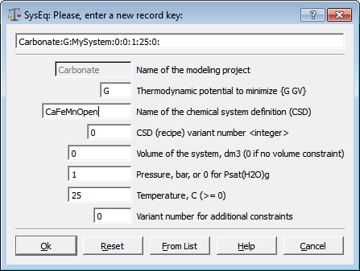

Previous Page Back to Start Page
(7) A dialog appearing below means
that
your project has been opened or created and now you are ready to model
geochemical
equilibria.

Click on the
"Syngle-System
Equilibria (SysEq)" button to create your first Chemical System
Definition
(CSD). In a small dialog below, GEMS will ask you to give a name to the
newly-created
system, and temperature
and pressure of interest.

By reading tooltips, you
can learn the meaning of each of eight fields of this SysEq record key,
under
which your new system and equilibrium state will be stored in the
"Carbonate"
project database. Let us call the new system "CaFeMnOpen"
and assume that it exists at
ambient conditions (1 bar pressure, 25 oC temperature).
Type the name
(as shown on the dialog), "1" in the field below the name, and press
"Ok" to proceed. You will see a "Remake Dialog" (will be replaced by a
System
Remake Wizard in future GEMS versions):

Please,
don't worry - the default flags are Ok and usually should be changed.
It
is only advisable to enter two comment lines identifying your new
system
(e.g. as shown on the dialog) and press "Ok" to continue.
(8)
This will allocate the necessary dynamic memory objects and display a Single
Thermodynamic
System Dialog - the main tool for setting up and
configuring
a particular chemical system definition (CSD) within a framework of the
modelling project.

Please, note that the list of solid phases
in
the actual version of GEMS default kernel database may differ from that
shown
above!
In
the upper right corner you see a key of SysEq record about to be
created in
the project database; this record key uniquely identifies your system
(identical
record keys are not allowed in GEMS databases).
In
the
middle, you see part of a list of thermodynamic phases comprising the
system
(under the "Input: System Definition" tab). By expanding any of the
items
in this list, you will get a list of chemical species included into
this
phase. By reading tooltips on the toolbar buttons, you can learn about
main
actions that can be performed from this dialog.
In
principle, the only thing you still have to do in order to complete the
chemical system definition is to specify a "recipe" for the total bulk
composition of the system. This can be done in many ways, but the
easiest one is to click on the "Bulk Composition"  toolbar button (and proceed to the next page of this screenshot
gallery).
toolbar button (and proceed to the next page of this screenshot
gallery).